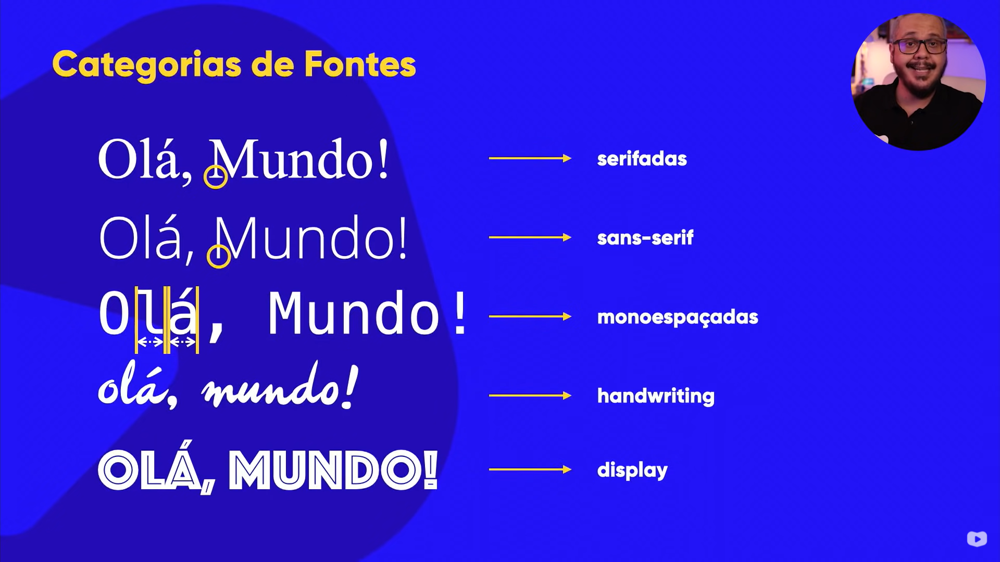
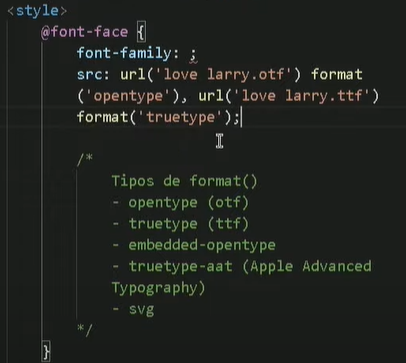
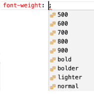
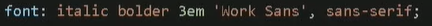

Pode usar fontes externas como a do Google para fazer a busca, bem como as fontes do CSS.
Tem que importar o tipo e colocar dentro do <style> ou no .css.
Se vier um arquivo .otf ou .ttf, vai ser necessário ultilizar, dentro de <style>, o @font-face{font-family: ; src : url("[pasta/arquivo]")}, como na imagem abaixo:

OBS1: No fonte-family pode escolher o nome que quiser.
OBS2: Pode-se usar os parâmetros normais, como font-weight, font-style, etc.
Para pegar fonte de alugm site ou algum lugar no seu navegador, pode baixar o Fonts Ninja e usar na extensão do Google Chrome.
Para pegar fonte de alguma imagem, pode usar os seguintes sites:
Para mudar a letra, use: font-family: [nome da fonte];
OBS: Pode usar mais de uma fonte, caso o dispositivo não reconheça a primeira. Para isso é importante ver quais cores combinam. As Web safe font combinations.
Para mudar o tamanho, use: font-size: [tamanho];
Para mudar o peso da fonte, use: font-weight: [valor];
Pode usar o nome ou a numeração, de 100 à 900, como visto abaixo:

Para mudar o estilo da fonte, use: font-style: [estilo];
Para decorar sua fonte, como sublinhado, use: text-decoration: [decoração];
Para alinhar o texto, na tag <style> ou no .css, use: text-align: [informação];
Para colocar recuo, na tag <style> ou no .css,use: text-indent: [medida];
Para condensar todos esses parâmetros para a fonte, pode-se usar algo encurtado. Para isso, use: font: [style (estilo)] [weight (largura)] [size (tamanho)] [family (famílias)]
OBS1: Separa os parâmetros com espaço.
OBS:2: Pode deixar em branco o que não for usar, mas tem que seguir essa ordem.
